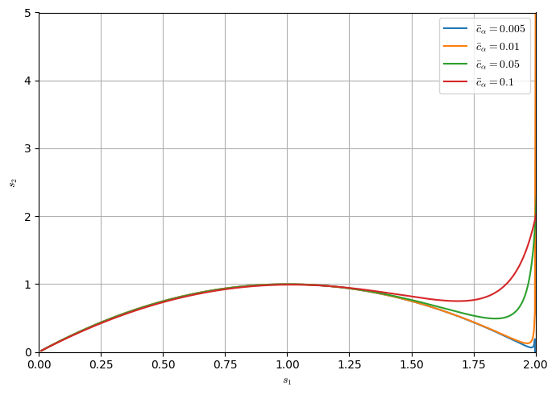
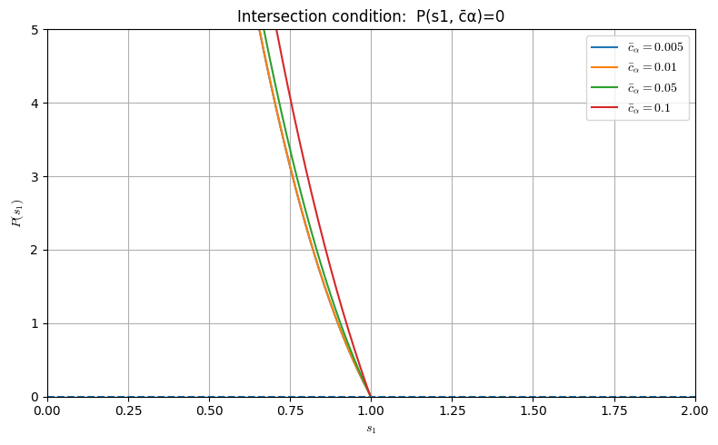

Sympy code for FDM expansion of LBM diffusive equation up to Fourth-order
import sympy as sp
# -----------------------------------------------------------------------------
# 1) Symbols (parameters and step sizes)
# -----------------------------------------------------------------------------
dx, dt = sp.symbols('Delta_x Delta_t', positive=True, real=True)
rt3s, rt4s = sp.symbols('TR_{3} TR_{4}', positive=True, real=True)
s1, s2, c, cb, nu = sp.symbols('s_{1} s_{2} c_{\\alpha} \overline{c}_{\\alpha} \\nu', real=True)
dut, dux, dux2, duxt, dut2 = sp.symbols('\\frac{\partial{u}}{\partial{t}} \\frac{\partial{u}}{\partial{x}} \\frac{\partial^{2}{u}}{\partial{x^{2}}} \\frac{\partial^{2}{u}}{\partial{x}\partial{t}} \\frac{\partial^{2}{u}}{\partial{t^{2}}}')
dux3, dux2t, duxt2, dut3 = sp.symbols('\\frac{\partial^{3}{u}}{\partial{x^{3}}} \\frac{\partial^{3}{u}}{\partial{x^{2}}\partial{t}} \\frac{\partial^{3}{u}}{\partial{x}\partial{t^{2}}} \\frac{\partial^{3}{u}}{\partial{t^{3}}}')
dux3t, dux2t2, duxt3 = sp.symbols('\\frac{\partial^{4}{u}}{\partial{x^{3}}\partial{t}} \\frac{\partial^{4}{u}}{\partial{x^{2}}\partial{t^{2}}} \\frac{\partial^{4}{u}}{\partial{x}\partial{t^{3}}}')
dux4, dut4 = sp.symbols('\\frac{\partial^{4}{u}}{\partial{x^{4}}} \\frac{\partial^{4}{u}}{\partial{t^{4}}}')
alpha1 = sp.simplify(1 - s2/3 - s2*cb*cb)
alpha2 = sp.simplify(1 + s1*(cb-1)/2 + s2*(cb*cb - sp.Rational(2,3))/2)
alpha3 = sp.simplify(1 - s1*(cb+1)/2 + s2*(cb*cb - sp.Rational(2,3))/2)
beta1 = sp.simplify(-2*s1*s2/3 + s1 + 2*s2/3 - 1 - s2*(1-s1)*cb*cb )
beta2 = sp.simplify( (s1*(1-cb)/2 -1)*(1-s2) + s2*(sp.Rational(2,3) - cb*cb)/2*(s1-1) )
beta3 = sp.simplify( (s1*(1+cb)/2 -1)*(1-s2) + s2*(sp.Rational(2,3) - cb*cb)/2*(s1-1) )
gamma = sp.simplify((s1-1)*(s2-1))
# -----------------------------------------------------------------------------
# 2) Continuous variables and field
# -----------------------------------------------------------------------------
x, t = sp.symbols('x t', real=True)
u = sp.Function('u')
# Shorthand for the base (continuous) field value at (x,t)
UF = u(x, t)
def taylor_u(sx=0, st=0, order_x=4, order_t=4):
expr = sp.S(0)
# Keep all mixed terms up to the specified individual orders.
for m in range(order_x + 1):
for n in range(order_t + 1):
# skip the (0,0) term? no, keep it.
term = ( (sx*dx)**m * (st*dt)**n
/ (sp.factorial(m)*sp.factorial(n))
* sp.diff(UF, x, m, t, n) )
expr += term
return sp.expand(expr)
# -----------------------------------------------------------------------------
# 4) Discrete stencil terms (expanded)
# -----------------------------------------------------------------------------
# u_x^{t+1}, u_x^{t}, u_x^{t-1}, u_x^{t-2}
u_t_p1 = taylor_u(sx=0, st=+1, order_x=0, order_t=4)
display(u_t_p1)
u_t_0 = taylor_u(sx=0, st=0, order_x=0, order_t=0) # exactly u(x,t)
display(u_t_0)
u_t_m1 = taylor_u(sx=0, st=-1, order_x=0, order_t=4)
display(u_t_m1)
u_t_m2 = taylor_u(sx=0, st=-2, order_x=0, order_t=4)
display(u_t_m2)
# u_{x±1}^{t}
u_xm1_t0 = taylor_u(sx=-1, st=0, order_x=4, order_t=0)
display(u_xm1_t0)
u_xp1_t0 = taylor_u(sx=+1, st=0, order_x=4, order_t=0)
display(u_xp1_t0)
# u_{x±1}^{t-1}
u_xm1_tm1 = taylor_u(sx=-1, st=-1, order_x=4, order_t=4)
u_xp1_tm1 = taylor_u(sx=+1, st=-1, order_x=4, order_t=4)
\[\displaystyle \frac{\Delta_{t}^{4} \frac{\partial^{4}}{\partial t^{4}} u{\left(x,t \right)}}{24} + \frac{\Delta_{t}^{3} \frac{\partial^{3}}{\partial t^{3}} u{\left(x,t \right)}}{6} + \frac{\Delta_{t}^{2} \frac{\partial^{2}}{\partial t^{2}} u{\left(x,t \right)}}{2} + \Delta_{t} \frac{\partial}{\partial t} u{\left(x,t \right)} + u{\left(x,t \right)}\]
\[\displaystyle u{\left(x,t \right)}\]
\[\displaystyle \frac{\Delta_{t}^{4} \frac{\partial^{4}}{\partial t^{4}} u{\left(x,t \right)}}{24} - \frac{\Delta_{t}^{3} \frac{\partial^{3}}{\partial t^{3}} u{\left(x,t \right)}}{6} + \frac{\Delta_{t}^{2} \frac{\partial^{2}}{\partial t^{2}} u{\left(x,t \right)}}{2} - \Delta_{t} \frac{\partial}{\partial t} u{\left(x,t \right)} + u{\left(x,t \right)}\]
\[\displaystyle \frac{2 \Delta_{t}^{4} \frac{\partial^{4}}{\partial t^{4}} u{\left(x,t \right)}}{3} - \frac{4 \Delta_{t}^{3} \frac{\partial^{3}}{\partial t^{3}} u{\left(x,t \right)}}{3} + 2 \Delta_{t}^{2} \frac{\partial^{2}}{\partial t^{2}} u{\left(x,t \right)} - 2 \Delta_{t} \frac{\partial}{\partial t} u{\left(x,t \right)} + u{\left(x,t \right)}\]
\[\displaystyle \frac{\Delta_{x}^{4} \frac{\partial^{4}}{\partial x^{4}} u{\left(x,t \right)}}{24} - \frac{\Delta_{x}^{3} \frac{\partial^{3}}{\partial x^{3}} u{\left(x,t \right)}}{6} + \frac{\Delta_{x}^{2} \frac{\partial^{2}}{\partial x^{2}} u{\left(x,t \right)}}{2} - \Delta_{x} \frac{\partial}{\partial x} u{\left(x,t \right)} + u{\left(x,t \right)}\]
\[\displaystyle \frac{\Delta_{x}^{4} \frac{\partial^{4}}{\partial x^{4}} u{\left(x,t \right)}}{24} + \frac{\Delta_{x}^{3} \frac{\partial^{3}}{\partial x^{3}} u{\left(x,t \right)}}{6} + \frac{\Delta_{x}^{2} \frac{\partial^{2}}{\partial x^{2}} u{\left(x,t \right)}}{2} + \Delta_{x} \frac{\partial}{\partial x} u{\left(x,t \right)} + u{\left(x,t \right)}\]
# -----------------------------------------------------------------------------
# 5) Build the discrete equation (expanded) and move everything to one side
# -----------------------------------------------------------------------------
lhs = u_t_p1
rhs = (alpha1*u_t_0 + alpha2*u_xm1_t0 + alpha3*u_xp1_t0
+ beta1*u_t_m1 + beta2*u_xm1_tm1 + beta3*u_xp1_tm1
+ gamma * u_t_m2)
residual = sp.simplify(sp.expand(lhs - rhs)) # = 0 is the modified equation
max_dx=4
max_dt=4
max_total=4
expr = sp.expand(residual)
poly = sp.Poly(expr, dx, dt, domain='EX') # keep symbolic coeffs
kept = sp.S(0)
for (px, pt), coeff in poly.terms():
if (px <= max_dx) and (pt <= max_dt) and ((px + pt) <= max_total):
kept += coeff * dx**px * dt**pt
term1 = sp.simplify(kept).subs(cb,c*dt/dx).subs({UF.diff(t, 4):dut4,UF.diff(x,t, 3):duxt3,UF.diff(t, 3):dut3,UF.diff(x, 2, t, 2):dux2t2,UF.diff(x, t, 2):duxt2,
UF.diff(t, 2):dut2,UF.diff(x,3,t):dux3t,UF.diff(x,2,t):dux2t,UF.diff(x,t):duxt,
UF.diff(t):dut,UF.diff(x,4):dux4,UF.diff(x,3):dux3,UF.diff(x,2):dux2,UF.diff(x):dux})
display(term1)
\[\displaystyle \frac{\Delta_{t}^{4} \frac{\partial^{4}{u}}{\partial{t^{4}}} \left(- 15 s_{1} s_{2} + 14 s_{1} + 14 s_{2} - 12\right)}{24} - \frac{\Delta_{t}^{4} \frac{\partial^{4}{u}}{\partial{x}\partial{t^{3}}} c_{\alpha} s_{1} \left(s_{2} - 1\right)}{6} + \frac{\Delta_{t}^{3} \frac{\partial^{3}{u}}{\partial{t^{3}}} \left(7 s_{1} s_{2} - 6 s_{1} - 6 s_{2} + 6\right)}{6} + \frac{\Delta_{t}^{3} \frac{\partial^{3}{u}}{\partial{x}\partial{t^{2}}} c_{\alpha} s_{1} \left(s_{2} - 1\right)}{2} + \frac{\Delta_{t}^{2} \Delta_{x}^{2} \frac{\partial^{4}{u}}{\partial{x^{2}}\partial{t^{2}}} \left(\frac{3 \Delta_{t}^{2} c_{\alpha}^{2} s_{1} s_{2}}{\Delta_{x}^{2}} - \frac{3 \Delta_{t}^{2} c_{\alpha}^{2} s_{2}}{\Delta_{x}^{2}} + s_{1} s_{2} - 3 s_{1} - 4 s_{2} + 6\right)}{12} - \frac{\Delta_{t}^{2} \Delta_{x}^{2} \frac{\partial^{4}{u}}{\partial{x^{3}}\partial{t}} c_{\alpha} s_{1} \left(s_{2} - 1\right)}{6} + \frac{\Delta_{t}^{2} \frac{\partial^{2}{u}}{\partial{t^{2}}} \left(- 3 s_{1} s_{2} + 2 s_{1} + 2 s_{2}\right)}{2} - \Delta_{t}^{2} \frac{\partial^{2}{u}}{\partial{x}\partial{t}} c_{\alpha} s_{1} \left(s_{2} - 1\right) - \frac{\Delta_{t} \Delta_{x}^{2} \frac{\partial^{3}{u}}{\partial{x^{2}}\partial{t}} \left(\frac{3 \Delta_{t}^{2} c_{\alpha}^{2} s_{1} s_{2}}{\Delta_{x}^{2}} - \frac{3 \Delta_{t}^{2} c_{\alpha}^{2} s_{2}}{\Delta_{x}^{2}} + s_{1} s_{2} - 3 s_{1} - 4 s_{2} + 6\right)}{6} + \frac{\Delta_{t} \Delta_{x}^{2} \frac{\partial^{3}{u}}{\partial{x^{3}}} c_{\alpha} s_{1} s_{2}}{6} + \Delta_{t} \frac{\partial{u}}{\partial{t}} s_{1} s_{2} + \Delta_{t} \frac{\partial{u}}{\partial{x}} c_{\alpha} s_{1} s_{2} + \frac{\Delta_{x}^{4} \frac{\partial^{4}{u}}{\partial{x^{4}}} s_{2} \left(\frac{3 \Delta_{t}^{2} c_{\alpha}^{2} s_{1}}{\Delta_{x}^{2}} - \frac{6 \Delta_{t}^{2} c_{\alpha}^{2}}{\Delta_{x}^{2}} + s_{1} - 2\right)}{72} + \frac{\Delta_{x}^{2} \frac{\partial^{2}{u}}{\partial{x^{2}}} s_{2} \left(\frac{3 \Delta_{t}^{2} c_{\alpha}^{2} s_{1}}{\Delta_{x}^{2}} - \frac{6 \Delta_{t}^{2} c_{\alpha}^{2}}{\Delta_{x}^{2}} + s_{1} - 2\right)}{6}\]
term2 = sp.collect(sp.expand(-term1/(dt*s1*s2)) + dut, {dut4*dt**3,dux4*dx**4/dt,dux3t*dt*dx**2*c,duxt3*dt**3*c,
dux2t2*dx**2*dt,dux3,dux2t*dx**2,
duxt2*dt**2*c,dut3*dt**2,dux2*dx**2/dt,duxt*dt*c,dut2*dt}).subs(dx**2/dt*(1/(3*s1)-sp.Rational(1,6)),nu)
display(term2)
\[\displaystyle \Delta_{t}^{3} \frac{\partial^{4}{u}}{\partial{t^{4}}} \left(\frac{5}{8} - \frac{7}{12 s_{2}} - \frac{7}{12 s_{1}} + \frac{1}{2 s_{1} s_{2}}\right) - \frac{\Delta_{t}^{3} \frac{\partial^{4}{u}}{\partial{x^{2}}\partial{t^{2}}} c_{\alpha}^{2}}{4} + \frac{\Delta_{t}^{3} \frac{\partial^{4}{u}}{\partial{x^{2}}\partial{t^{2}}} c_{\alpha}^{2}}{4 s_{1}} + \Delta_{t}^{3} \frac{\partial^{4}{u}}{\partial{x}\partial{t^{3}}} c_{\alpha} \left(\frac{1}{6} - \frac{1}{6 s_{2}}\right) + \Delta_{t}^{2} \frac{\partial^{3}{u}}{\partial{t^{3}}} \left(- \frac{7}{6} + \frac{1}{s_{2}} + \frac{1}{s_{1}} - \frac{1}{s_{1} s_{2}}\right) + \frac{\Delta_{t}^{2} \frac{\partial^{3}{u}}{\partial{x^{2}}\partial{t}} c_{\alpha}^{2}}{2} - \frac{\Delta_{t}^{2} \frac{\partial^{3}{u}}{\partial{x^{2}}\partial{t}} c_{\alpha}^{2}}{2 s_{1}} + \Delta_{t}^{2} \frac{\partial^{3}{u}}{\partial{x}\partial{t^{2}}} c_{\alpha} \left(- \frac{1}{2} + \frac{1}{2 s_{2}}\right) + \Delta_{t} \Delta_{x}^{2} \frac{\partial^{4}{u}}{\partial{x^{2}}\partial{t^{2}}} \left(- \frac{1}{12} + \frac{1}{4 s_{2}} + \frac{1}{3 s_{1}} - \frac{1}{2 s_{1} s_{2}}\right) + \Delta_{t} \Delta_{x}^{2} \frac{\partial^{4}{u}}{\partial{x^{3}}\partial{t}} c_{\alpha} \left(\frac{1}{6} - \frac{1}{6 s_{2}}\right) - \frac{\Delta_{t} \Delta_{x}^{2} \frac{\partial^{4}{u}}{\partial{x^{4}}} c_{\alpha}^{2}}{24} + \frac{\Delta_{t} \Delta_{x}^{2} \frac{\partial^{4}{u}}{\partial{x^{4}}} c_{\alpha}^{2}}{12 s_{1}} + \Delta_{t} \frac{\partial^{2}{u}}{\partial{t^{2}}} \left(\frac{3}{2} - \frac{1}{s_{2}} - \frac{1}{s_{1}}\right) - \frac{\Delta_{t} \frac{\partial^{2}{u}}{\partial{x^{2}}} c_{\alpha}^{2}}{2} + \frac{\Delta_{t} \frac{\partial^{2}{u}}{\partial{x^{2}}} c_{\alpha}^{2}}{s_{1}} + \Delta_{t} \frac{\partial^{2}{u}}{\partial{x}\partial{t}} c_{\alpha} \left(1 - \frac{1}{s_{2}}\right) + \Delta_{x}^{2} \frac{\partial^{3}{u}}{\partial{x^{2}}\partial{t}} \left(\frac{1}{6} - \frac{1}{2 s_{2}} - \frac{2}{3 s_{1}} + \frac{1}{s_{1} s_{2}}\right) - \frac{\Delta_{x}^{2} \frac{\partial^{3}{u}}{\partial{x^{3}}} c_{\alpha}}{6} + \frac{\partial^{2}{u}}{\partial{x^{2}}} \nu - \frac{\partial{u}}{\partial{x}} c_{\alpha} + \frac{\Delta_{x}^{4} \frac{\partial^{4}{u}}{\partial{x^{4}}} \left(- \frac{1}{72} + \frac{1}{36 s_{1}}\right)}{\Delta_{t}}\]
term3= term2.subs({duxt:nu*dux3-c*dux2,dut2:dx**2/dt*(2-1*s1)/(6*s1)*nu*dux4-2*nu*c*dux3+c*c*dux2,
duxt2:-2*nu*c*dux4+c*c*dux3,dux2t:nu*dux4-c*dux3,dut3:3*nu*c*c*dux4-c*c*c*dux3,
duxt3:-c*c*c*dux4,dux3t:-c*dux4,dux2t2:c*c*dux4,dut4:c*c*c*c*dux4})
display(term3)
\[\displaystyle - \Delta_{t}^{3} \frac{\partial^{4}{u}}{\partial{x^{4}}} c_{\alpha}^{4} \left(\frac{1}{6} - \frac{1}{6 s_{2}}\right) + \Delta_{t}^{3} \frac{\partial^{4}{u}}{\partial{x^{4}}} c_{\alpha}^{4} \left(\frac{5}{8} - \frac{7}{12 s_{2}} - \frac{7}{12 s_{1}} + \frac{1}{2 s_{1} s_{2}}\right) - \frac{\Delta_{t}^{3} \frac{\partial^{4}{u}}{\partial{x^{4}}} c_{\alpha}^{4}}{4} + \frac{\Delta_{t}^{3} \frac{\partial^{4}{u}}{\partial{x^{4}}} c_{\alpha}^{4}}{4 s_{1}} + \frac{\Delta_{t}^{2} c_{\alpha}^{2} \left(- \frac{\partial^{3}{u}}{\partial{x^{3}}} c_{\alpha} + \frac{\partial^{4}{u}}{\partial{x^{4}}} \nu\right)}{2} - \frac{\Delta_{t}^{2} c_{\alpha}^{2} \left(- \frac{\partial^{3}{u}}{\partial{x^{3}}} c_{\alpha} + \frac{\partial^{4}{u}}{\partial{x^{4}}} \nu\right)}{2 s_{1}} + \Delta_{t}^{2} c_{\alpha} \left(- \frac{1}{2} + \frac{1}{2 s_{2}}\right) \left(\frac{\partial^{3}{u}}{\partial{x^{3}}} c_{\alpha}^{2} - 2 \frac{\partial^{4}{u}}{\partial{x^{4}}} \nu c_{\alpha}\right) + \Delta_{t}^{2} \left(- \frac{\partial^{3}{u}}{\partial{x^{3}}} c_{\alpha}^{3} + 3 \frac{\partial^{4}{u}}{\partial{x^{4}}} \nu c_{\alpha}^{2}\right) \left(- \frac{7}{6} + \frac{1}{s_{2}} + \frac{1}{s_{1}} - \frac{1}{s_{1} s_{2}}\right) - \Delta_{t} \Delta_{x}^{2} \frac{\partial^{4}{u}}{\partial{x^{4}}} c_{\alpha}^{2} \left(\frac{1}{6} - \frac{1}{6 s_{2}}\right) + \Delta_{t} \Delta_{x}^{2} \frac{\partial^{4}{u}}{\partial{x^{4}}} c_{\alpha}^{2} \left(- \frac{1}{12} + \frac{1}{4 s_{2}} + \frac{1}{3 s_{1}} - \frac{1}{2 s_{1} s_{2}}\right) - \frac{\Delta_{t} \Delta_{x}^{2} \frac{\partial^{4}{u}}{\partial{x^{4}}} c_{\alpha}^{2}}{24} + \frac{\Delta_{t} \Delta_{x}^{2} \frac{\partial^{4}{u}}{\partial{x^{4}}} c_{\alpha}^{2}}{12 s_{1}} - \frac{\Delta_{t} \frac{\partial^{2}{u}}{\partial{x^{2}}} c_{\alpha}^{2}}{2} + \frac{\Delta_{t} \frac{\partial^{2}{u}}{\partial{x^{2}}} c_{\alpha}^{2}}{s_{1}} + \Delta_{t} c_{\alpha} \left(1 - \frac{1}{s_{2}}\right) \left(- \frac{\partial^{2}{u}}{\partial{x^{2}}} c_{\alpha} + \frac{\partial^{3}{u}}{\partial{x^{3}}} \nu\right) + \Delta_{t} \left(\frac{3}{2} - \frac{1}{s_{2}} - \frac{1}{s_{1}}\right) \left(\frac{\partial^{2}{u}}{\partial{x^{2}}} c_{\alpha}^{2} - 2 \frac{\partial^{3}{u}}{\partial{x^{3}}} \nu c_{\alpha} + \frac{\Delta_{x}^{2} \frac{\partial^{4}{u}}{\partial{x^{4}}} \nu \left(2 - s_{1}\right)}{6 \Delta_{t} s_{1}}\right) - \frac{\Delta_{x}^{2} \frac{\partial^{3}{u}}{\partial{x^{3}}} c_{\alpha}}{6} + \Delta_{x}^{2} \left(- \frac{\partial^{3}{u}}{\partial{x^{3}}} c_{\alpha} + \frac{\partial^{4}{u}}{\partial{x^{4}}} \nu\right) \left(\frac{1}{6} - \frac{1}{2 s_{2}} - \frac{2}{3 s_{1}} + \frac{1}{s_{1} s_{2}}\right) + \frac{\partial^{2}{u}}{\partial{x^{2}}} \nu - \frac{\partial{u}}{\partial{x}} c_{\alpha} + \frac{\Delta_{x}^{4} \frac{\partial^{4}{u}}{\partial{x^{4}}} \left(- \frac{1}{72} + \frac{1}{36 s_{1}}\right)}{\Delta_{t}}\]
term4= sp.collect(sp.expand(term3),[dux4,dux3,dux2])
display(term4)
\[\displaystyle \frac{\partial^{2}{u}}{\partial{x^{2}}} \nu + \frac{\partial^{3}{u}}{\partial{x^{3}}} \left(\frac{\Delta_{t}^{2} c_{\alpha}^{3}}{6} - \frac{\Delta_{t}^{2} c_{\alpha}^{3}}{2 s_{2}} - \frac{\Delta_{t}^{2} c_{\alpha}^{3}}{2 s_{1}} + \frac{\Delta_{t}^{2} c_{\alpha}^{3}}{s_{1} s_{2}} - 2 \Delta_{t} \nu c_{\alpha} + \frac{\Delta_{t} \nu c_{\alpha}}{s_{2}} + \frac{2 \Delta_{t} \nu c_{\alpha}}{s_{1}} - \frac{\Delta_{x}^{2} c_{\alpha}}{3} + \frac{\Delta_{x}^{2} c_{\alpha}}{2 s_{2}} + \frac{2 \Delta_{x}^{2} c_{\alpha}}{3 s_{1}} - \frac{\Delta_{x}^{2} c_{\alpha}}{s_{1} s_{2}}\right) + \frac{\partial^{4}{u}}{\partial{x^{4}}} \left(\frac{5 \Delta_{t}^{3} c_{\alpha}^{4}}{24} - \frac{5 \Delta_{t}^{3} c_{\alpha}^{4}}{12 s_{2}} - \frac{\Delta_{t}^{3} c_{\alpha}^{4}}{3 s_{1}} + \frac{\Delta_{t}^{3} c_{\alpha}^{4}}{2 s_{1} s_{2}} - 2 \Delta_{t}^{2} \nu c_{\alpha}^{2} + \frac{2 \Delta_{t}^{2} \nu c_{\alpha}^{2}}{s_{2}} + \frac{5 \Delta_{t}^{2} \nu c_{\alpha}^{2}}{2 s_{1}} - \frac{3 \Delta_{t}^{2} \nu c_{\alpha}^{2}}{s_{1} s_{2}} - \frac{7 \Delta_{t} \Delta_{x}^{2} c_{\alpha}^{2}}{24} + \frac{5 \Delta_{t} \Delta_{x}^{2} c_{\alpha}^{2}}{12 s_{2}} + \frac{5 \Delta_{t} \Delta_{x}^{2} c_{\alpha}^{2}}{12 s_{1}} - \frac{\Delta_{t} \Delta_{x}^{2} c_{\alpha}^{2}}{2 s_{1} s_{2}} - \frac{\Delta_{x}^{2} \nu}{12} - \frac{\Delta_{x}^{2} \nu}{3 s_{2}} + \frac{2 \Delta_{x}^{2} \nu}{3 s_{1} s_{2}} - \frac{\Delta_{x}^{2} \nu}{3 s_{1}^{2}} - \frac{\Delta_{x}^{4}}{72 \Delta_{t}} + \frac{\Delta_{x}^{4}}{36 \Delta_{t} s_{1}}\right) - \frac{\partial{u}}{\partial{x}} c_{\alpha}\]
rt3 = sp.factor((dt**2*c**3/6 - dt**2*c**3/(2*s2) - dt**2*c**3/(2*s1) + dt**2*c**3/(s1*s2) - 2*dt*nu*c + dt*nu*c/s2 + 2*dt*nu*c/s1 - dx*dx*c/3
+ dx*dx*c/(2*s2) + 2*dx*dx*c/(3*s1) - dx*dx*c/(s1*s2)) )
display(rt3)
\[\displaystyle \frac{c_{\alpha} \left(\Delta_{t}^{2} c_{\alpha}^{2} s_{1} s_{2} - 3 \Delta_{t}^{2} c_{\alpha}^{2} s_{1} - 3 \Delta_{t}^{2} c_{\alpha}^{2} s_{2} + 6 \Delta_{t}^{2} c_{\alpha}^{2} - 12 \Delta_{t} \nu s_{1} s_{2} + 6 \Delta_{t} \nu s_{1} + 12 \Delta_{t} \nu s_{2} - 2 \Delta_{x}^{2} s_{1} s_{2} + 3 \Delta_{x}^{2} s_{1} + 4 \Delta_{x}^{2} s_{2} - 6 \Delta_{x}^{2}\right)}{6 s_{1} s_{2}}\]
rt4 = (5*dt**3*c**4/24 - 5*dt**3*c**4/(12*s2) - dt**3*c**4/(3*s1) + dt**3*c**4/(2*s1*s2) - 2*dt*dt*nu*c*c
+ 2*dt**2*nu*c**2/s2 + 5*dt**2*nu*c**2/(2*s1) - 3*dt**2*nu*c**2/(s2*s1) - 7*dt*dx**2*c**2/(24) + 5*dt*dx**2*c**2/(12*s2) + 5*dt*dx**2*c**2/(12*s1)
- dt*dx**2*c**2/(2*s1*s2) - dx**2*nu/(12) - dx**2*nu/(3*s2) + 2*dx**2*nu/(3*s1*s2) - dx**2*nu/(3*s1**2) - dx**4/(72*dt) + dx**4/(36*dt*s1) )
display(rt4)
\[\displaystyle \frac{5 \Delta_{t}^{3} c_{\alpha}^{4}}{24} - \frac{5 \Delta_{t}^{3} c_{\alpha}^{4}}{12 s_{2}} - \frac{\Delta_{t}^{3} c_{\alpha}^{4}}{3 s_{1}} + \frac{\Delta_{t}^{3} c_{\alpha}^{4}}{2 s_{1} s_{2}} - 2 \Delta_{t}^{2} \nu c_{\alpha}^{2} + \frac{2 \Delta_{t}^{2} \nu c_{\alpha}^{2}}{s_{2}} + \frac{5 \Delta_{t}^{2} \nu c_{\alpha}^{2}}{2 s_{1}} - \frac{3 \Delta_{t}^{2} \nu c_{\alpha}^{2}}{s_{1} s_{2}} - \frac{7 \Delta_{t} \Delta_{x}^{2} c_{\alpha}^{2}}{24} + \frac{5 \Delta_{t} \Delta_{x}^{2} c_{\alpha}^{2}}{12 s_{2}} + \frac{5 \Delta_{t} \Delta_{x}^{2} c_{\alpha}^{2}}{12 s_{1}} - \frac{\Delta_{t} \Delta_{x}^{2} c_{\alpha}^{2}}{2 s_{1} s_{2}} - \frac{\Delta_{x}^{2} \nu}{12} - \frac{\Delta_{x}^{2} \nu}{3 s_{2}} + \frac{2 \Delta_{x}^{2} \nu}{3 s_{1} s_{2}} - \frac{\Delta_{x}^{2} \nu}{3 s_{1}^{2}} - \frac{\Delta_{x}^{4}}{72 \Delta_{t}} + \frac{\Delta_{x}^{4}}{36 \Delta_{t} s_{1}}\]
term5= term4.subs(sp.expand(rt3),rt3s).subs(sp.expand(rt4),rt4s)
display(term5)
\[\displaystyle TR_{3} \frac{\partial^{3}{u}}{\partial{x^{3}}} + TR_{4} \frac{\partial^{4}{u}}{\partial{x^{4}}} + \frac{\partial^{2}{u}}{\partial{x^{2}}} \nu - \frac{\partial{u}}{\partial{x}} c_{\alpha}\]
Solution for Third-order acuracy
rt3r = sp.factor((dt**2*c**3/6 - dt**2*c**3/(2*s2) - dt**2*c**3/(2*s1) + dt**2*c**3/(s1*s2) - 2*dt*nu*c + dt*nu*c/s2 + 2*dt*nu*c/s1 - dx*dx*c/3
+ dx*dx*c/(2*s2) + 2*dx*dx*c/(3*s1) - dx*dx*c/(s1*s2)).subs(nu,dx**2/dt*(1/(3*s1)-sp.Rational(1,6))) )
display(rt3r)
\[\displaystyle \frac{c_{\alpha} \left(\Delta_{t}^{2} c_{\alpha}^{2} s_{1}^{2} s_{2} - 3 \Delta_{t}^{2} c_{\alpha}^{2} s_{1}^{2} - 3 \Delta_{t}^{2} c_{\alpha}^{2} s_{1} s_{2} + 6 \Delta_{t}^{2} c_{\alpha}^{2} s_{1} + 2 \Delta_{x}^{2} s_{1}^{2} - 2 \Delta_{x}^{2} s_{1} s_{2} - 4 \Delta_{x}^{2} s_{1} + 4 \Delta_{x}^{2} s_{2}\right)}{6 s_{1}^{2} s_{2}}\]
rt3r2 = sp.factor((dt**2*c**2*s2*s1**2 - 3*dt**2*c**2*s1**2 - 3*dt**2*c**2*s1*s2 + 6*dt**2*c**2*s1 + 2*dx*dx*s1*s1
- 2*dx*dx*s1*s2 - 4*dx*dx*s1 + 4*dx*dx*s2 ).subs(c,cb*dx/dt))
display(rt3r2)
\[\displaystyle \Delta_{x}^{2} \left(\overline{c}_{\alpha}^{2} s_{1}^{2} s_{2} - 3 \overline{c}_{\alpha}^{2} s_{1}^{2} - 3 \overline{c}_{\alpha}^{2} s_{1} s_{2} + 6 \overline{c}_{\alpha}^{2} s_{1} + 2 s_{1}^{2} - 2 s_{1} s_{2} - 4 s_{1} + 4 s_{2}\right)\]
rt3r3 = sp.collect(sp.factor(rt3r2/dx**2),cb*cb)
display(rt3r3)
\[\displaystyle \overline{c}_{\alpha}^{2} \left(s_{1}^{2} s_{2} - 3 s_{1}^{2} - 3 s_{1} s_{2} + 6 s_{1}\right) + 2 s_{1}^{2} - 2 s_{1} s_{2} - 4 s_{1} + 4 s_{2}\]
tf1=sp.factor(2*s1*s1 -2*s1*s2 - 4*s1 + 4*s2)
tf2=sp.factor(s1*s1*s2 -3*s1*s1 - 3*s1*s2 + 6*s1)
rt3r4 = rt3r3.subs(sp.expand(tf1),tf1).subs(sp.expand(tf2),tf2)
display(rt3r4)
\[\displaystyle \overline{c}_{\alpha}^{2} s_{1} \left(s_{1} s_{2} - 3 s_{1} - 3 s_{2} + 6\right) + 2 \left(s_{1} - 2\right) \left(s_{1} - s_{2}\right)\]
w0 = sp.symbols('w_0', positive=True, real=True)
chentr3= 3*w0*(s1*s1 - s1*s1*s2 + 5*s1*s2 - 4*s2 - 2*s1) + 2*s2*(6 + s1*s1 - 6*s1) - cb*cb*s1*(3*s2 + 3*s1 - s1*s2 - 6)
chentr32=sp.simplify(chentr3.subs(w0,sp.Rational(2,3)))
sp.collect(chentr32,s2)
\[\displaystyle - 3 \overline{c}_{\alpha}^{2} s_{1}^{2} + 6 \overline{c}_{\alpha}^{2} s_{1} + 2 s_{1}^{2} - 4 s_{1} + s_{2} \left(\overline{c}_{\alpha}^{2} s_{1}^{2} - 3 \overline{c}_{\alpha}^{2} s_{1} - 2 s_{1} + 4\right)\]
import sympy as sp
s1, s2, cbar = sp.symbols('s1 s2 cbar')
A = cbar**2
eq = sp.Eq(A*s1*(s1*s2 - 3*s1 - 3*s2 + 6) + 2*(s1-2)*(s1-s2), 0)
sp.solve(eq, s2)[0] # solve for s2
\[\displaystyle \frac{s_{1} \left(3 \bar{c}^{2} s_{1} - 6 \bar{c}^{2} - 2 s_{1} + 4\right)}{\bar{c}^{2} s_{1}^{2} - 3 \bar{c}^{2} s_{1} - 2 s_{1} + 4}\]
import numpy as np
import sympy as sp
import matplotlib.pyplot as plt
import matplotlib
matplotlib.rcParams['mathtext.fontset'] = 'cm'
# ---------------- s2(s1) from first equation ----------------
s2_expr = sp.solve(A*s1*(s1*s2 - 3*s1 - 3*s2 + 6) + 2*(s1-2)*(s1-s2), s2)[0]
# Convert to numerical function
f = sp.lambdify((s1, cbar), s2_expr, "numpy")
# ---------------- Plot ----------------
s1_vals = np.linspace(0.01, 3.0, 800)
cbar_vals = [0.005, 0.01, 0.05, 0.1]
plt.figure(figsize=(7,5))
for cb in cbar_vals:
s2_vals = f(s1_vals, cb)
# mask poles / blow-ups
s2_vals[np.abs(s2_vals) > 10] = np.nan
plt.plot(s1_vals, s2_vals, label=rf"$\bar c_\alpha={cb}$")
plt.xlabel(r"$s_1$")
plt.ylabel(r"$s_2$")
plt.ylim(0, 5)
plt.xlim(0, 2)
plt.grid(True)
plt.legend()
plt.tight_layout()
plt.show()

Solution for Fouth-order acuracy
rt4r = sp.factor(sp.expand(sp.factor(rt4).subs(nu,dx**2/dt*(1/(3*s1)-sp.Rational(1,6))).subs(c,cb*dx/dt) ) )
display(rt4r)
\[\displaystyle \frac{\Delta_{x}^{4} \left(15 \overline{c}_{\alpha}^{4} s_{1}^{3} s_{2} - 30 \overline{c}_{\alpha}^{4} s_{1}^{3} - 24 \overline{c}_{\alpha}^{4} s_{1}^{2} s_{2} + 36 \overline{c}_{\alpha}^{4} s_{1}^{2} + 3 \overline{c}_{\alpha}^{2} s_{1}^{3} s_{2} + 6 \overline{c}_{\alpha}^{2} s_{1}^{3} - 48 \overline{c}_{\alpha}^{2} s_{1}^{2} s_{2} + 48 \overline{c}_{\alpha}^{2} s_{1}^{2} + 60 \overline{c}_{\alpha}^{2} s_{1} s_{2} - 72 \overline{c}_{\alpha}^{2} s_{1} + 4 s_{1}^{3} - 16 s_{1}^{2} + 4 s_{1} s_{2} + 16 s_{1} - 8 s_{2}\right)}{72 \Delta_{t} s_{1}^{3} s_{2}}\]
tf3=sp.factor(15*s1**3*s2 - 30*s1**3 - 24*s1**2*s2 + 36*s1**2)
tf4=sp.factor(3*s1**3*s2 + 6*s1**3 - 48*s1**2*s2 + 48*s1**2 + 60*s1*s2 - 72*s1)
tf5=sp.factor(4*s1**3 - 16*s1**2 + 4*s1*s2 + 16*s1 - 8*s2)
rt4r2 = sp.collect(rt4r/dx**4*72*dt*s1**3*s2 , cb**4).subs(sp.expand(tf3),tf3).subs(sp.expand(tf4),tf4).subs(sp.expand(tf5),tf5)
display(rt4r2)
\[\displaystyle 3 \overline{c}_{\alpha}^{4} s_{1}^{2} \left(5 s_{1} s_{2} - 10 s_{1} - 8 s_{2} + 12\right) + 3 \overline{c}_{\alpha}^{2} s_{1} \left(s_{1}^{2} s_{2} + 2 s_{1}^{2} - 16 s_{1} s_{2} + 16 s_{1} + 20 s_{2} - 24\right) + 4 \left(s_{1} - 2\right) \left(s_{1}^{2} - 2 s_{1} + s_{2}\right)\]
import sympy as sp
# --- symbols ---
s1, s2, cbar = sp.symbols('s1 s2 cbar')
# (cbar = \overline{c}_\alpha)
# --- equation (your second one) ---
expr = (
3*cbar**4*s1**2*(5*s1*s2 - 10*s1 - 8*s2 + 12)
+ 3*cbar**2*s1*(s1**2*s2 + 2*s1**2 - 16*s1*s2 + 16*s1 + 20*s2 - 24)
+ 4*(s1 - 2)*(s1**2 - 2*s1 + s2)
)
eq = sp.Eq(expr, 0)
# --- solve for s2 ---
sol_s2 = sp.solve(eq, s2)[0]
print("s2(s1, cbar) =")
display(sol_s2)
# --- optional: numerator/denominator (factored) ---
num, den = sp.fraction(sp.together(sol_s2))
print("\nFactored numerator:")
display(sp.factor(num))
print("\nFactored denominator:")
display(sp.factor(den))
s2(s1, cbar) =
\[\displaystyle \frac{2 s_{1} \left(15 \bar{c}^{4} s_{1}^{2} - 18 \bar{c}^{4} s_{1} - 3 \bar{c}^{2} s_{1}^{2} - 24 \bar{c}^{2} s_{1} + 36 \bar{c}^{2} - 2 s_{1}^{2} + 8 s_{1} - 8\right)}{15 \bar{c}^{4} s_{1}^{3} - 24 \bar{c}^{4} s_{1}^{2} + 3 \bar{c}^{2} s_{1}^{3} - 48 \bar{c}^{2} s_{1}^{2} + 60 \bar{c}^{2} s_{1} + 4 s_{1} - 8}\]
Factored numerator:
\[\displaystyle 2 s_{1} \left(15 \bar{c}^{4} s_{1}^{2} - 18 \bar{c}^{4} s_{1} - 3 \bar{c}^{2} s_{1}^{2} - 24 \bar{c}^{2} s_{1} + 36 \bar{c}^{2} - 2 s_{1}^{2} + 8 s_{1} - 8\right)\]
Factored denominator:
\[\displaystyle 15 \bar{c}^{4} s_{1}^{3} - 24 \bar{c}^{4} s_{1}^{2} + 3 \bar{c}^{2} s_{1}^{3} - 48 \bar{c}^{2} s_{1}^{2} + 60 \bar{c}^{2} s_{1} + 4 s_{1} - 8\]
from sympy import latex
print(latex(sp.solve(eq, s2)[0]))
\frac{2 s_{1} \left(15 \bar{c}^{4} s_{1}^{2} - 18 \bar{c}^{4} s_{1} - 3 \bar{c}^{2} s_{1}^{2} - 24 \bar{c}^{2} s_{1} + 36 \bar{c}^{2} - 2 s_{1}^{2} + 8 s_{1} - 8\right)}{15 \bar{c}^{4} s_{1}^{3} - 24 \bar{c}^{4} s_{1}^{2} + 3 \bar{c}^{2} s_{1}^{3} - 48 \bar{c}^{2} s_{1}^{2} + 60 \bar{c}^{2} s_{1} + 4 s_{1} - 8}
import numpy as np
import sympy as sp
import matplotlib.pyplot as plt
import matplotlib
matplotlib.rcParams['mathtext.fontset'] = 'cm'
# ---------------- s2(s1) expression ----------------
s2_expr = (2*s1*(15*cbar**4*s1**2 - 18*cbar**4*s1
- 3*cbar**2*s1**2 - 24*cbar**2*s1
+ 36*cbar**2 - 2*s1**2 + 8*s1 - 8)
) / (15*cbar**4*s1**3 - 24*cbar**4*s1**2
+ 3*cbar**2*s1**3 - 48*cbar**2*s1**2
+ 60*cbar**2*s1 + 4*s1 - 8)
# Convert to numerical function
f = sp.lambdify((s1, cbar), s2_expr, "numpy")
# ---------------- Plot ----------------
s1_vals = np.linspace(0.01, 3.0, 800)
cbar_vals = [0.005, 0.01, 0.05, 0.1]
plt.figure(figsize=(7,5))
for cb in cbar_vals:
s2_vals = f(s1_vals, cb)
plt.plot(s1_vals, s2_vals, label=rf"$\bar c_\alpha={cb}$")
plt.xlabel(r"$s_1$")
plt.ylabel(r"$s_2$")
plt.ylim(0, 5)
plt.xlim(0, 2)
plt.grid(True)
plt.legend()
plt.tight_layout()
plt.show()

import numpy as np
import sympy as sp
import matplotlib.pyplot as plt
import matplotlib
matplotlib.rcParams['mathtext.fontset'] = 'cm'
# ---------------- Symbols ----------------
s1, s2, cbar = sp.symbols('s1 s2 cbar')
A = cbar**2
# ---------------- Solution 1 (simpler equation) ----------------
s2_expr_1 = sp.solve(sp.Eq(A*s1*(s1*s2 - 3*s1 - 3*s2 + 6) + 2*(s1-2)*(s1-s2), 0), s2)[0]
# ---------------- Solution 2 (bigger equation) ----------------
s2_expr_2 = (2*s1*(15*cbar**4*s1**2 - 18*cbar**4*s1
- 3*cbar**2*s1**2 - 24*cbar**2*s1
+ 36*cbar**2 - 2*s1**2 + 8*s1 - 8)
) / (15*cbar**4*s1**3 - 24*cbar**4*s1**2
+ 3*cbar**2*s1**3 - 48*cbar**2*s1**2
+ 60*cbar**2*s1 + 4*s1 - 8)
# Lambdify (fast numeric evaluation)
f1 = sp.lambdify((s1, cbar), s2_expr_1, "numpy")
f2 = sp.lambdify((s1, cbar), s2_expr_2, "numpy")
# ---------------- Plot settings ----------------
s1_vals = np.linspace(0.01, 3.0, 1200)
cbar_vals = [0.005, 0.01, 0.05, 0.1]
plt.figure(figsize=(8, 5))
for cb in cbar_vals:
y1 = f1(s1_vals, cb)
y2 = f2(s1_vals, cb)
# mask poles/blow-ups to avoid ugly vertical spikes
y1 = np.where(np.isfinite(y1) & (np.abs(y1) < 10), y1, np.nan)
y2 = np.where(np.isfinite(y2) & (np.abs(y2) < 10), y2, np.nan)
# same label color per cbar, different linestyle per equation
plt.plot(s1_vals, y1, linestyle='-', label=rf"Eq1, $\bar c_\alpha={cb}$")
plt.plot(s1_vals, y2, linestyle='--', label=rf"Eq2, $\bar c_\alpha={cb}$")
plt.xlabel(r"$s_1$")
plt.ylabel(r"$s_2$")
plt.xlim(0, 2)
plt.ylim(0, 5)
plt.grid(True)
plt.legend(ncol=2, fontsize=9)
plt.tight_layout()
plt.show()

import numpy as np
import sympy as sp
import matplotlib.pyplot as plt
import matplotlib
matplotlib.rcParams['mathtext.fontset'] = 'cm'
# ---------------- Symbols ----------------
s1, s2, cbar = sp.symbols('s1 s2 cbar')
A = cbar**2
# ---------------- Eq 1: solve for s2 ----------------
s2_expr_1 = sp.solve(sp.Eq(A*s1*(s1*s2 - 3*s1 - 3*s2 + 6) + 2*(s1-2)*(s1-s2), 0), s2)[0]
# ---------------- Eq 2: s2(s1) (your big equation) ----------------
s2_expr_2 = (2*s1*(15*cbar**4*s1**2 - 18*cbar**4*s1
- 3*cbar**2*s1**2 - 24*cbar**2*s1
+ 36*cbar**2 - 2*s1**2 + 8*s1 - 8)
) / (15*cbar**4*s1**3 - 24*cbar**4*s1**2
+ 3*cbar**2*s1**3 - 48*cbar**2*s1**2
+ 60*cbar**2*s1 + 4*s1 - 8)
# difference g(s1) = f1 - f2 (roots => intersections)
g_expr = sp.simplify(s2_expr_1 - s2_expr_2)
# lambdify for fast evaluation
f1 = sp.lambdify((s1, cbar), s2_expr_1, "numpy")
f2 = sp.lambdify((s1, cbar), s2_expr_2, "numpy")
g = sp.lambdify((s1, cbar), g_expr, "numpy")
# numeric root refinement (mpmath via sympy)
def refine_root(cb, x0):
x = sp.nsolve(g_expr.subs(cbar, cb), s1, x0)
return float(x)
def unique_sorted(xs, tol=1e-6):
xs = sorted(xs)
out = []
for x in xs:
if not out or abs(x - out[-1]) > tol:
out.append(x)
return out
# ---------------- Parameters ----------------
cbar_vals = [0.005, 0.01, 0.05, 0.1]
s1_min, s1_max = 0.01, 3.0
Nscan = 4000
s1_grid = np.linspace(s1_min, s1_max, Nscan)
# ---------------- Plot ----------------
plt.figure(figsize=(9, 5))
for cb in cbar_vals:
y1 = f1(s1_grid, cb)
y2 = f2(s1_grid, cb)
yg = g(s1_grid, cb)
# mask blow-ups / poles
y1 = np.where(np.isfinite(y1) & (np.abs(y1) < 10), y1, np.nan)
y2 = np.where(np.isfinite(y2) & (np.abs(y2) < 10), y2, np.nan)
yg = np.where(np.isfinite(yg) & (np.abs(yg) < 1e6), yg, np.nan)
# draw both curves
plt.plot(s1_grid, y1, linestyle='-', label=rf"$TR_{3}$, $\bar c_\alpha={cb}$")
plt.plot(s1_grid, y2, linestyle='--', label=rf"$TR_{4}$, $\bar c_\alpha={cb}$")
# --- find sign changes of g on the scan grid ---
roots_guess = []
for i in range(len(s1_grid) - 1):
a, b = yg[i], yg[i+1]
if np.isnan(a) or np.isnan(b):
continue
if a == 0.0:
roots_guess.append(s1_grid[i])
elif a * b < 0: # sign change
roots_guess.append(0.5 * (s1_grid[i] + s1_grid[i+1]))
# refine guesses with nsolve
roots = []
for x0 in roots_guess:
try:
xr = refine_root(cb, x0)
if s1_min <= xr <= s1_max:
roots.append(xr)
except Exception:
pass
roots = unique_sorted(roots, tol=1e-5)
# compute s2 at intersection points and plot markers
for xr in roots:
yr = float(sp.N(s2_expr_1.subs({cbar: cb, s1: xr})))
if np.isfinite(yr) and abs(yr) < 10:
plt.plot([xr], [yr], marker='o', linestyle='None')
if roots:
print(f"cbar={cb}: intersections at s1 =", roots)
plt.xlabel(r"$s_1$",fontsize=16)
plt.ylabel(r"$s_2$",fontsize=16)
plt.xlim(0, 3)
plt.ylim(-5, 5)
plt.grid(True)
plt.legend(ncol=2, fontsize=9)
plt.tight_layout()
plt.show()
cbar=0.005: intersections at s1 = [0.9999937477340344]
cbar=0.01: intersections at s1 = [0.9999749637281587]
cbar=0.05: intersections at s1 = [0.9993519974731944]
cbar=0.1: intersections at s1 = [0.9971142700951519]
import sympy as sp
s1, s2, cbar = sp.symbols('s1 s2 cbar')
A = cbar**2
E1 = A*s1*(s1*s2 - 3*s1 - 3*s2 + 6) + 2*(s1-2)*(s1-s2)
E2 = (3*cbar**4*s1**2*(5*s1*s2 - 10*s1 - 8*s2 + 12)
+ 3*cbar**2*s1*(s1**2*s2 + 2*s1**2 - 16*s1*s2 + 16*s1 + 20*s2 - 24)
+ 4*(s1-2)*(s1**2 - 2*s1 + s2))
# eliminate s2 -> equation in s1 and cbar only
R = sp.factor(sp.resultant(E1, E2, s2))
print("Resultant (intersection condition):")
display(R)
# Optional: show it using A = cbar^2
R_A = sp.factor(R.subs(cbar**2, A).subs(cbar**4, A**2).subs(cbar**6, A**3))
print("\nIn terms of A=cbar^2:")
display(R_A)
Resultant (intersection condition):
\[\displaystyle s_{1} \left(15 \bar{c}^{6} s_{1}^{4} - 36 \bar{c}^{6} s_{1}^{3} + 36 \bar{c}^{6} s_{1}^{2} - 15 \bar{c}^{4} s_{1}^{4} + 36 \bar{c}^{4} s_{1}^{3} - 36 \bar{c}^{4} s_{1}^{2} - 2 \bar{c}^{2} s_{1}^{4} + 68 \bar{c}^{2} s_{1}^{3} - 308 \bar{c}^{2} s_{1}^{2} + 480 \bar{c}^{2} s_{1} - 240 \bar{c}^{2} - 8 s_{1}^{3} + 40 s_{1}^{2} - 64 s_{1} + 32\right)\]
In terms of A=cbar^2:
\[\displaystyle s_{1} \left(15 \bar{c}^{6} s_{1}^{4} - 36 \bar{c}^{6} s_{1}^{3} + 36 \bar{c}^{6} s_{1}^{2} - 15 \bar{c}^{4} s_{1}^{4} + 36 \bar{c}^{4} s_{1}^{3} - 36 \bar{c}^{4} s_{1}^{2} - 2 \bar{c}^{2} s_{1}^{4} + 68 \bar{c}^{2} s_{1}^{3} - 308 \bar{c}^{2} s_{1}^{2} + 480 \bar{c}^{2} s_{1} - 240 \bar{c}^{2} - 8 s_{1}^{3} + 40 s_{1}^{2} - 64 s_{1} + 32\right)\]
import numpy as np
import sympy as sp
import matplotlib.pyplot as plt
import matplotlib
matplotlib.rcParams['mathtext.fontset'] = 'cm'
# ---------------- Combined validity polynomial P(s1,A) ----------------
P = (
15*A**3*s1**4 - 36*A**3*s1**3 + 36*A**3*s1**2
- 15*A**2*s1**4 + 36*A**2*s1**3 - 36*A**2*s1**2
- 2*A*s1**4 + 68*A*s1**3 - 308*A*s1**2 + 480*A - 240*A
- 8*s1**3 + 40*s1**2 - 64*s1 + 32)
# Numeric function
P_fun = sp.lambdify((s1, cbar), P, "numpy")
# ---------------- Plot ----------------
s1_vals = np.linspace(0, 3, 800)
cbar_vals = [0.005, 0.01, 0.05, 0.1]
plt.figure(figsize=(8,5))
for cb in cbar_vals:
y = P_fun(s1_vals, cb)
plt.plot(s1_vals, y, label=rf"$\bar c_\alpha={cb}$")
plt.axhline(0, linestyle="--")
plt.xlabel(r"$s_1$")
plt.ylabel(r"$P(s_1)$")
plt.title("Intersection condition: P(s1, c̄α)=0")
plt.grid(True)
plt.xlim(0, 2)
plt.ylim(0, 5)
plt.legend()
plt.tight_layout()
plt.show()

# from sympy import latex
# print(latex(rt4r2))